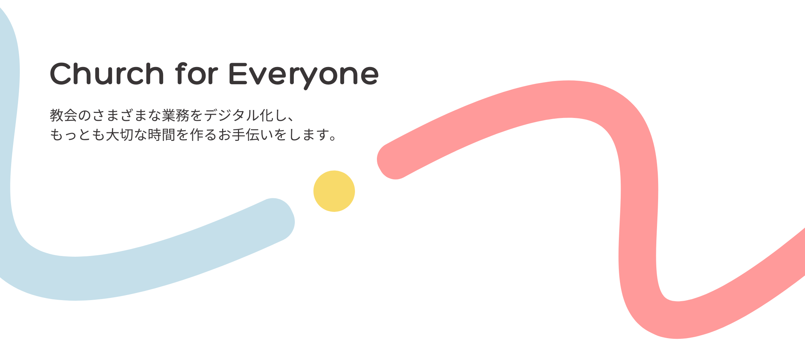

主な機能
来会記録
礼拝やイベントの参加者をスマホやPCで簡単に記録することが可能になります。新しい来会者の登録も簡単に行えます。
献金登録
礼拝の献金額をスマホやPCで簡単に入力して、安全にデータを保管することが可能になります。

見える化
パソコンやスマホから教会のさまざまな情報を自動的に見える化して把握することが可能になります。
利用方法
Freelancer is a free bootstrap theme created by Start Bootstrap. The download includes the complete source files including HTML, CSS, and JavaScript as well as optional SASS stylesheets for easy customization.
You can create your own custom avatar for the masthead, change the icon in the dividers, and add your email address to the contact form to make it fully functional!
You can create your own custom avatar for the masthead, change the icon in the dividers, and add your email address to the contact form to make it fully functional!